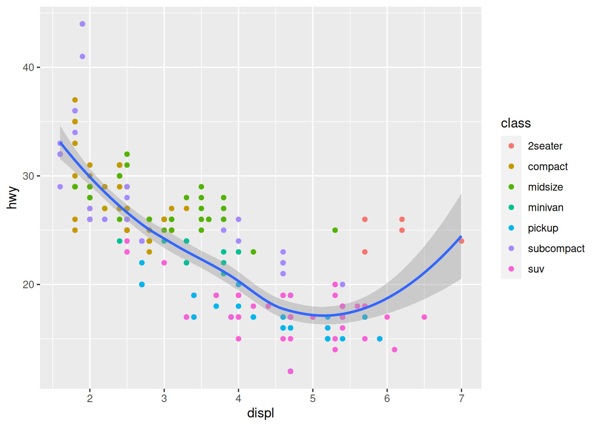

# This is a block that runs
2 + 3[1] 5Some text.
Note that each header automatically creates an anchor, making it easy to link to specific sections of your documents.
Text can be rendered in italic or in bold as well as underlined.
You can use superscripts2, subscriptstest, strikethrough, and inline code.
This is a quote.
You can create columns.
And you can set their respective width.
| Col 1 | Col 2 | Col 3 |
|---|---|---|
| a | 1 | red |
| b | 2 | orange |
| c | 3 | yellow |
Tables can be fully customized (or you could use raw html).
\[ \frac{\partial \mathrm C}{ \partial \mathrm t } + \frac{1}{2}\sigma^{2} \mathrm S^{2} \frac{\partial^{2} \mathrm C}{\partial \mathrm C^2} + \mathrm r \mathrm S \frac{\partial \mathrm C}{\partial \mathrm S}\ = \mathrm r \mathrm C \]
See Section 1.2.
Note that you can add bibliographies, flow charts, the equivalent of HTML “div”, and just so much more. Remember that this is a tiny overview.
# This is a block that runs
2 + 3[1] 5Did you notice that the content of your code blocks can be copied with a click? Of course, this is customizable.
# This is a block that doesn't run
2 + 3 country var
1 Canada 2.9
2 USA 3.1
3 Mexico 4.5plot(cars)
You can play with options to add a title:
plot(cars)
You can have more complex multi-plot layouts:
plot(cars)
plot(pressure)

For those who have ggplot21, you can try that too:
library(ggplot2)
ggplot(data = mpg, mapping = aes(x = displ, y = hwy)) +
geom_point(mapping = aes(color = class)) +
geom_smooth()`geom_smooth()` using method = 'loess' and formula = 'y ~ x'
You can install it with:
install.packages("ggplot2")